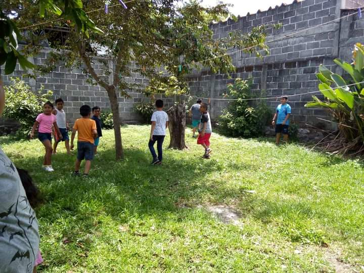

En el centro educativo "CRUZVI" nos preocupamos por la educacion de nuestros niños, por lo cual manejamos diveros programas o formas de trabajo para obtener el mayor desempeño y los mejores resultados. Aceptamos niños en un rango de edad de 7 a 15 años!. A continuación te mostramos las siguientes formas de trabajo:
1.CLUB DE TAREAS
¿Qué es el club de tareas? bueno esto es un método de trabajo donde los niños van y únicamente se realizan tareas de sus respectivas escuelas, con el fin de que entiendan y mas adelante puedan ellos realizarlas sin problema alguno. Este curso se lleva durante todo el ciclo escolar.

2.CURSO DE REGULARIZACIÓN
¿Qué es el curso de regularización? este curso es para aquellos niños que estan perdidos en la escuela, que van mal en mates, ciencias, quizas español, todas las materias. Este es un curso intensivo atacando preferentemente a la materia en que peor van, vienen y se trabaja con ellos y se les deja algunas tareas para casa y asi reforzar lo estudiado. Este curso ha ayudado a muchos niños a salir de ese bache en el que se encontraban. Este curso se lleva durante todo el ciclo escolar.

3.CURSO DE VERANO
¿Qué es el curso de verano? como su nombre lo dice, se lleva a cabo durante el verano. En este curso se trabaja de todo un poco, quizas los niños tienen tarea para el regreso a clases o van mal en una materia y reprobaron o simplemente quieren pasar su verano aprendiendo mientras se divierten, como bien dice nuestro eslogan. Durante este curso se trabajan actividades muy diferentes y muy divertidas a las de los demas cursos, alguna sería que en el curso de verano se practican deportes o el yoga. Este curso solo se lleva a cabo durante el verano.
